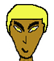
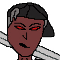

|  |
Name: Sphinx
Description: Another minion of King Zephion. He's the third strongest minion. He is very hot tempered and loves to fight whenever he gets a chance to. Wishes he was the boss of the other minions but accepts his role of third command. |
|
Name: Tankur
Description: The weakest of the minions of King Zephion. He is kept around because he has a big stature and scares most people when they first look at him. He still has plenty of power to beat an averagely strong opponent. | |
|  |
Name: Viltron
Description: The strongest of the minions. He is also calm headed, and plans things out before attacking. Makes sure what he sets out to do is in the name of King Zephion, and that he completes every task. |